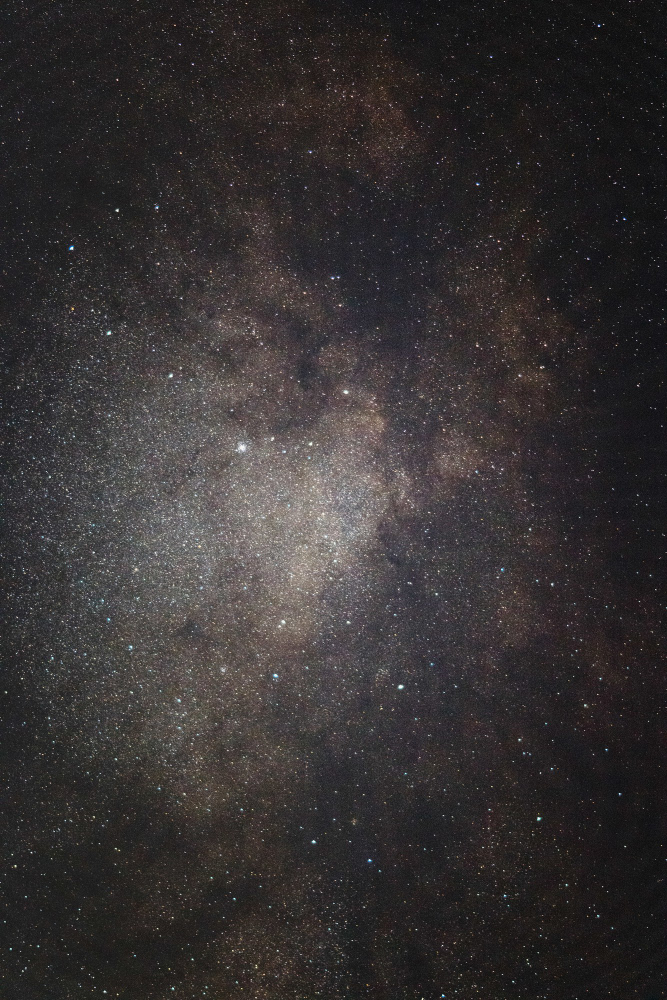

About CosmoPix
CosmoPix is a research project dedicated to unraveling how galaxies form and evolve across cosmic time,
from the nearby universe to the earliest epochs seen with JWST and HST. Our approach is rooted in
pixel-by-pixel (spatially resolved) analysis, where each galaxy is dissected into its smallest observable components.
By mapping stellar mass, star formation histories, and morphologies at the pixel scale,
we can trace how galaxies grow, inside-out, outside-in, or through more complex pathways.
Our work connects low- and high-redshift samples, bridging deep-field observations with local galaxies,
to build a consistent picture of galaxy evolution. The CosmoPix platform serves as a hub for our team’s research,
publications, and publicly available datasets, enabling the community to explore the structure and history of galaxies through the lens of pixels.
From pixels to the universe, mapping galaxies across space and time.From pixels to the universe, mapping galaxies across space and time.
-

Our Science
At CosmoPix, we explore how galaxies form and evolve by analyzing them pixel by pixel, revealing where stars formed and how galaxies built their mass over time.
-
Publications
Publications by our team showcase research on galaxies and their evolution, sharing discoveries with the scientific community and beyond.
-
ّ
Data
The data collected by our team serve as a foundation for studying galaxy formation, stellar mass growth, and the evolutionary pathways that shape galaxies across cosmic time.